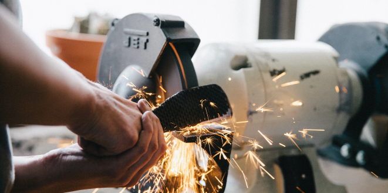

Makerspace
Our interdisciplinary Makerspace is the heart of innovation, uniting students and faculty to explore, create, and turn dreams into tangible, functional projects. From design and rapid prototyping to cutting-edge research and the birth of startup ventures, we're your one-stop destination.
Our tinkering space is equipped with everything you need - from ideation and brainstorming to precision design, cutting, machining, testing, 3D printing, and hands-on training through workshops.
Visit the maker space website to join us!
Visit MakerspaceWhy Makerspace?
At SNU IOE, we're deeply committed to STEAM education - Science, Technology, Engineering, Arts, and Mathematics. And what better way to embody this commitment than by providing a dedicated collaborative space? Our Makerspace is designed to equip you with the perfect environment for your creative and innovative pursuits.
-
Interdisciplinary Research and Project Creation
Makerspace brings together students and faculty from diverse backgrounds, fostering collaboration that leads to groundbreaking research and innovative project development.
 -
State-of-the-Art Tools and Technologies
Our Makerspace is packed with user-friendly, automated, and state-of-the-art tools and technologies. We believe in affordable access to the very best, empowering you to turn your ideas into reality.
-
World-Class Research Test-Beds
For those aiming to produce quality publications, our Makerspace offers world-class research test-beds, providing a platform for your academic excellence.
-
Training and Workshops
We're not just about providing tools - we're also about teaching you to use them efficiently and safely. Our trainings and workshops ensure you're well-prepared to take on your projects.
-
Brand Building
Participate in and organize national and international competitions through Makerspace. It's a platform for brand building and showcasing your talent to the world.
-
Solutions Across Diverse Fields
It's a one-stop shop for creating solutions in sustainability, green energy, intelligent building, robotics, networks, and AI. Your projects can contribute to shaping the future in countless ways.
Engage with Makerspace
-
Visit Makerspace
View Equipments
Resources
Events
Contact Us